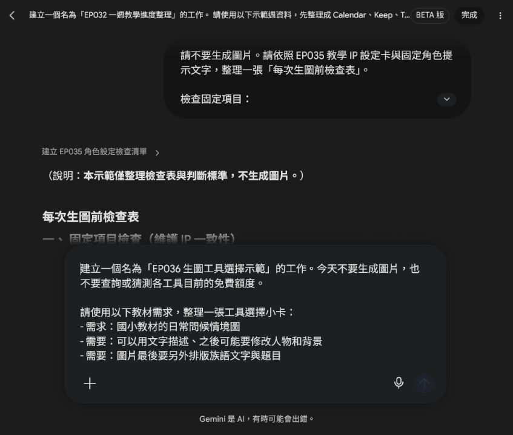
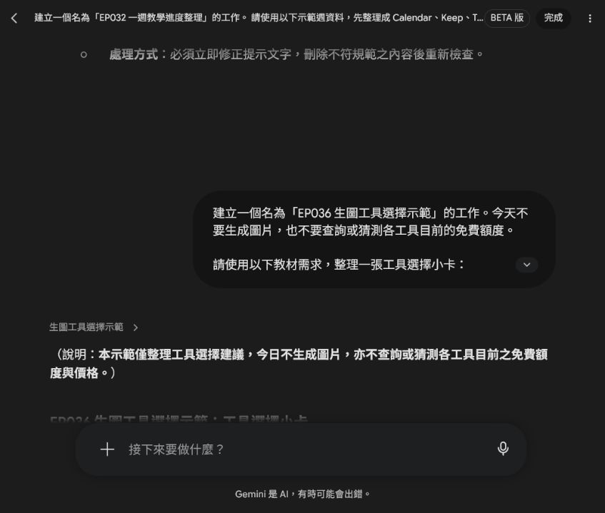
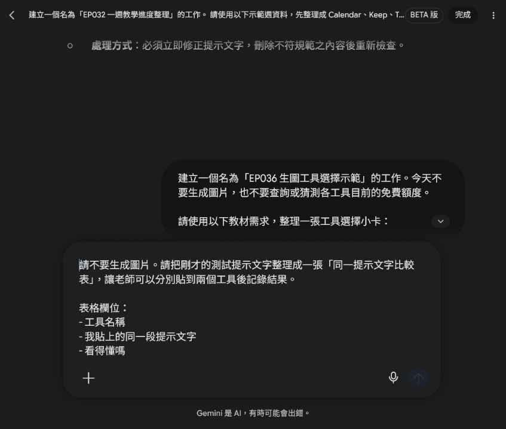
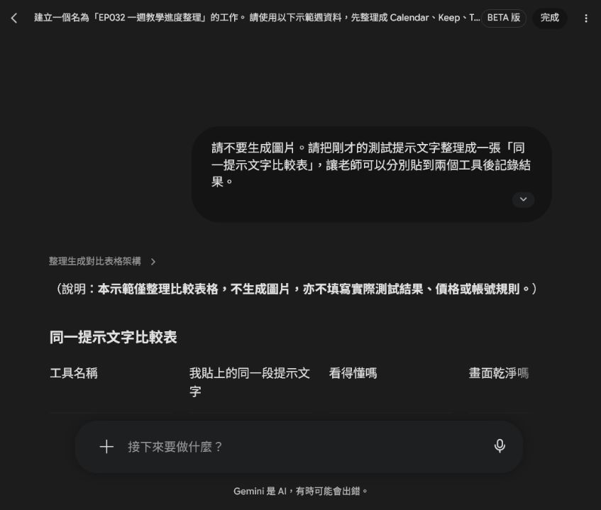

EP036｜免費生圖網站怎麼選？
今天只做一件事
網路上的 AI 生圖網站很多。
有人推薦 ChatGPT，有人用 Gemini，也有人說 Bing Image Creator、Adobe Firefly 很好用。
初學者最容易發生的事情就是：
還沒開始做教材，就先花很多時間研究哪一個 AI 最厲害。
其實不用。
今天我們只學一件事：
根據你現在要做的教材，選一個適合自己的生圖工具。
先記住：免費不等於無限
看到「免費生圖」，不要先理解成：
想生幾張就生幾張。
免費方案常見的限制包括：
- 每天或每段時間有使用限制
- 免費版生成速度比較慢
- 某些進階模型不能使用
- 有些功能需要登入
- 免費額度可能隨時調整
所以我們今天不背「到底免費幾張」。
因為這些數字以後可能會改。
真正要學的是：
我現在要做什麼？哪個工具最方便？
STEP 1｜先問自己：我要做哪一種圖片？
先不要看網站名稱。
先選你現在最接近的需求。
| 如果你現在想要…… | 可以先試 |
|---|---|
| 用聊天的方式慢慢把教材圖改好 | ChatGPT |
| 已經常用 Google，希望直接對話生圖 | Gemini |
| 想免費多試幾次不同圖片 | Bing Image Creator |
| 想多試不同視覺風格 | Adobe Firefly |
不用四個都學。
第一次先選一個就好。
先把「我需要圖片做什麼」寫清楚，再請 Spark 幫你整理工具適合情境。這一步不查免費額度，也不直接生成圖片。


選擇 1｜ChatGPT
適合誰？
如果你喜歡直接告訴 AI：
「人物太多，幫我減少。」
「把背景改成教室門口。」
「角色留下來，但是不要文字。」
這種一邊聊天、一邊修改圖片的方式，可以先從 ChatGPT 開始。
ChatGPT 免費方案目前也可以生成圖片，但免費版的圖片生成有使用限制，而且速度可能較慢。
適合做
- 情境教材圖
- 看圖說話
- 教學角色
- 講義插圖
- 已有圖片後繼續調整
優點
不用很會寫專業提示詞。
可以先說需求，再慢慢補充：
「太複雜了。」
「學生年齡再小一點。」
「背景簡單。」
對第一次接觸 AI 生圖的人比較容易理解。
選擇 2｜Gemini
適合誰？
如果你平常已經有 Google 帳號，而且常用 Google 的工具，可以從 Gemini 開始。
目前 Gemini 的免費方案包含圖片生成與圖片編輯功能。
適合做
- 教材插圖
- 情境圖片
- 圖片修改
- 教學活動概念圖
- 快速嘗試不同畫面
優點
操作方式也是直接用文字跟 AI 說：
「我要什麼圖片。」
不用另外學很複雜的生圖介面。
選擇 3｜Bing Image Creator
適合誰？
如果你只是想：
「我想免費多試幾張圖看看。」
可以認識 Bing Image Creator。
它目前可讓 Microsoft 個人帳號免費使用。每天提供 15 次快速生成，用完後仍可以改用較慢的標準生成速度。
適合做
- 一般教材插圖
- 場景圖
- 不同風格嘗試
- 同一個提示詞多試幾次
要注意
如果你使用的是學校或公司的 Microsoft 工作帳號，有可能無法直接使用 Bing Image Creator；Microsoft 官方目前說明它使用的是個人 Microsoft 帳號，而不是一般學校或公司使用的 Entra ID 帳號。
如果學校帳號進不去，不一定是你操作錯誤。
選擇 4｜Adobe Firefly
適合誰？
如果你已經開始在意：
- 插畫風格
- 畫面質感
- 不同視覺版本
- 後續設計處理
可以再試 Adobe Firefly。
Adobe Firefly 目前有免費方案，可以每天進行有限次數的免費生成。
適合做
- 教材插畫
- 不同視覺風格嘗試
- 背景素材
- 設計素材
- 想繼續進行圖片設計的人
但第一次不用急著學
如果你只是第一次做：
「兩位學生在教室門口打招呼」
這類簡單教材圖，不需要四個網站全部打開。
先用 ChatGPT、Gemini 或 Bing Image Creator 其中一個完成第一張，就可以了。
STEP 2｜真的不知道怎麼選？用這三題
遇到新的生圖網站時，只問三件事情。
第一題：我要一直跟 AI 修改嗎？
如果你希望可以一直說：
「再簡單一點。」
「人物移到左邊。」
「不要文字。」
那就優先選擇可以直接對話修改圖片的工具。
第二題：我只是想多試幾張嗎？
如果現在只是練習：
「同一個提示文字會生出什麼？」
就選有免費生成額度，而且操作簡單的工具。
不要一開始就付費。
第三題：圖片生完，我還要排版嗎？
如果圖片最後還要加入：
- 族語文字
- 題目
- 箭頭
- 說明
- 學習單內容
生圖工具只負責：
把圖片做好。
文字和教材排版，再放到你熟悉的排版工具處理。
不要要求生圖 AI 一次把整張教材全部完成。
STEP 3｜第一次不要比較十個網站
第一次練習，只選兩個工具就夠了。
而且要使用同一段提示文字。
這樣才知道差別在哪裡。
今天的測試提示文字
請生成一張適合國小教材使用的插圖。
圖片用途：
給學生進行日常問候的看圖說話活動。
畫面內容：
白天的國小教室門口，兩位學生遇見彼此。
一位學生自然地揮手打招呼，另一位學生微笑回應。
背景簡單，只需要教室門、窗戶和少量校園元素。
風格：
溫暖、清楚、簡單，適合國小教材。
限制：
- 圖片中不要出現任何文字。
- 不要出現校名、Logo 或水印。
- 人物表情自然。
- 背景不要太複雜。
- 保留部分空白，方便後續排版。
STEP 4｜同一句話，放進兩個工具試試看
不要讓兩個工具使用不同提示文字。先用 Spark 做一張空白比較表，實際測試後再由老師填寫結果。

例如今天選：
ChatGPT ＋ Gemini
或：
Gemini ＋ Bing Image Creator
分別貼入完全相同的提示文字。
不要其中一個寫很詳細，另外一個只寫一句話。
這樣才比較得出來。

STEP 5｜圖片出來後，只比四件事情
不要先問：
「哪一張比較漂亮？」
先看它適不適合教學。
| 要比較什麼 | 要看什麼 |
|---|---|
| 看得懂嗎？ | 學生一眼知道人物在做什麼 |
| 畫面乾淨嗎？ | 不會有太多不需要的東西 |
| 符合需求嗎？ | 場景、人物、動作有沒有正確 |
| 好修改嗎？ | 不滿意時，能不能容易繼續調整 |
我的生圖工具選擇小卡
試完後，把結果記下來。
我試的工具：
① ____________________
② ____________________
我覺得比較容易操作的是：
比較符合教材需求的是：
我之後先固定使用：
不用找到「最好的 AI」
這一點很重要。
沒有一個生圖網站會永遠：
- 最漂亮
- 最免費
- 最快
- 最會畫教材
- 最適合所有人
而且 AI 工具一直都在改。
所以不要一直問：
「現在世界上最強的生圖 AI 是哪一個？」
對老師更重要的問題其實是：
「哪一個工具可以讓我最快完成今天的教材？」
如果還是不知道選哪一個
可以先照這個順序。
我完全第一次用
先試：
ChatGPT 或 Gemini
因為可以直接用平常說話的方式描述圖片。
免費額度不夠
再試：
Bing Image Creator
開始想研究不同視覺風格
再試：
Adobe Firefly
一個常見錯誤：每張圖都換工具
今天 ChatGPT。
明天 Gemini。
後天 Bing。
下一張又換 Firefly。
最後你會發現：
每張教材的畫風、人物和感覺都不太一樣。
如果你正在製作同一套教材，找到適合自己的工具後，建議先：
固定工具＋固定角色設定＋固定提示文字格式。
教材會比較容易維持一致。
免費工具也不要放這些資料
不論使用哪一個網站，都不要把學生的：
- 真實姓名
- 照片
- 學號
- 電話
- 地址
- 成績
- 可以辨識個人的資料
直接拿來當教材生圖素材。
如果只是要做教材情境，可以改成：
「兩位國小學生」
「一位老師」
「教室裡的學生」
不用使用真實學生資料。
完成前最後檢查
□ 我知道免費不代表無限使用。
□ 我沒有一次學四、五個生圖網站。
□ 我有先決定自己要做什麼圖片。
□ 我用同一段提示文字測試不同工具。
□ 我比較的是教材能不能使用，不只是漂不漂亮。
□ 我選出一個目前最順手的工具。
□ 我沒有上傳學生個資。
今天記住一句話就好
不要先找最強的生圖網站，先找最適合你現在教材工作的工具。
教材備註
AI 工具的免費方案、生成次數和功能會持續調整。本講義以 2026 年 8 月官方公開資訊為整理基準，實際使用時請以各網站當下顯示的方案為準。